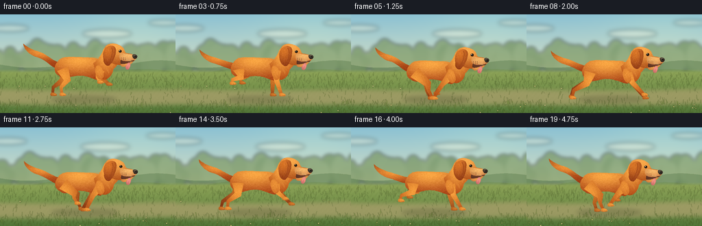
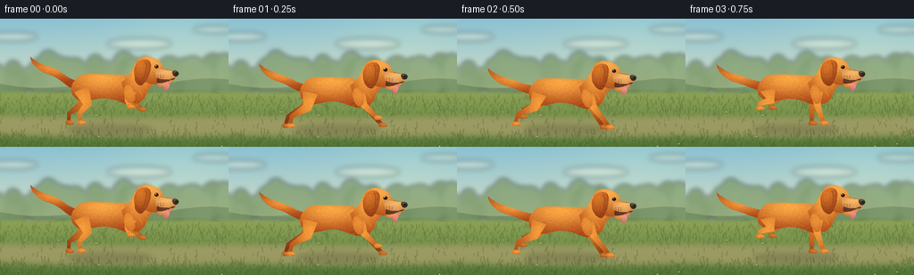

CODING AGENTS AS PIXEL WORLD MODELS
traex/GPT-6.1-Sol · instance_preservation_0000
点击播放 · 原生 RGB 像素
逐轮保存的候选
回放视频、检查图与代码变化。
每份候选均可单独播放。实际图片检查记录在下方工具轨迹中。
候选 01播放与检查图
点击播放 · 原生 RGB 像素


展开代码变化
--- 上一保存版本
+++ 本次保存版本
@@ -0,0 +1,226 @@
+from pathlib import Path
+import math
+import numpy as np
+from PIL import Image, ImageDraw, ImageFilter
+import artifact_io
+
+ROOT=Path(__file__).resolve().parent
+W,H,S=256,144,3
+WW,HH=W*S,H*S
+rng=np.random.default_rng(813)
+
+def bezpath(start, segments, n=16):
+ pts=[start]; p=np.array(start,float)
+ for c1,c2,end in segments:
+ a,b,q=map(lambda v:np.array(v,float),(c1,c2,end))
+ for t in np.linspace(0,1,n+1)[1:]:
+ pts.append(tuple((1-t)**3*p+3*(1-t)**2*t*a+3*(1-t)*t*t*b+t**3*q))
+ p=q
+ return pts
+
+def poly(draw, pts, fill):
+ draw.polygon([(round(x*S),round(y*S)) for x,y in pts],fill=fill)
+def line(draw,pts,fill,width=1):
+ draw.line([(round(x*S),round(y*S)) for x,y in pts], fill=fill,width=max(1,round(width*S)),joint='curve')
+def ell(draw,box,fill):
+ draw.ellipse(tuple(round(v*S) for v in box),fill=fill)
+
+Y,X=np.mgrid[0:HH,0:WW]; xf=X/S; yf=Y/S
+
+def shaded(im,points,base,light,center,radius,shadow=(0,0),fur=None,seed=0):
+ mask=Image.new('L',(WW,HH)); md=ImageDraw.Draw(mask); poly(md,points,255)
+ cx,cy=center; rx,ry=radius
+ hi=np.exp(-(((xf-cx)/rx)**2+((yf-cy)/ry)**2)*1.25)
+ # diffuse, soft rounded volume with a warm top light
+ lo=np.clip((yf-cy)/max(ry,1),0,1)
+ col=np.asarray(base)[None,None,:]+hi[:,:,None]*(np.asarray(light)-base)[None,None,:]-lo[:,:,None]*np.asarray(shadow)[None,None,:]
+ layer=Image.fromarray(np.uint8(np.clip(col,0,255)))
+ if fur:
+ fd=ImageDraw.Draw(layer); rr=np.random.default_rng(seed)
+ xmin,xmax=min(p[0] for p in points),max(p[0] for p in points)
+ ymin,ymax=min(p[1] for p in points),max(p[1] for p in points)
+ for _ in range(int((xmax-xmin)*(ymax-ymin)*1.5)):
+ x=rr.uniform(xmin,xmax); y=rr.uniform(ymin,ymax)
+ if 0<=int(x*S)<WW and 0<=int(y*S)<HH and mask.getpixel((int(x*S),int(y*S)))>0:
+ length=rr.uniform(.45,1.8); a=fur+rr.normal(0,.18)
+ c=col[min(HH-1,max(0,int(y*S))),min(WW-1,max(0,int(x*S)))]+rr.uniform(-14,15)
+ line(fd,[(x,y),(x+length*math.cos(a),y+length*math.sin(a))],tuple(np.clip(c,0,255).astype(int)),.22)
+ im.paste(layer,(0,0),mask)
+
+# Fixed world assets: background parallax remains consistent across frames.
+clouds=[(39,20,28,5),(181,28,36,6),(265,12,24,4)]
+trees=[(rng.uniform(0,360),rng.uniform(54,77),rng.uniform(8,17),rng.uniform(10,22),rng.uniform(0,1)) for _ in range(75)]
+grasses=[(rng.uniform(0,420),rng.uniform(89,149),rng.uniform(1.5,7),rng.uniform(-2,2),rng.uniform(0,1)) for _ in range(1550)]
+flowers=[(rng.uniform(0,420),rng.uniform(104,143),rng.uniform(.35,.7)) for _ in range(55)]
+
+def background(i):
+ t=i/4
+ arr=np.zeros((HH,WW,3),float)
+ f=np.clip(yf/95,0,1)
+ arr[:]=np.array([139,193,211])*(1-f[:,:,None])+np.array([229,230,194])*f[:,:,None]
+ arr+=np.exp(-(((xf-200)/80)**2+((yf-12)/50)**2))[:,:,None]*np.array([12,9,0])
+ im=Image.fromarray(np.uint8(np.clip(arr,0,255)))
+ cl=Image.new('RGBA',(WW,HH)); d=ImageDraw.Draw(cl)
+ for x,y,rx,ry in clouds:
+ x=(x-t*1)%310-25
+ ell(d,(x-rx,y-ry,x+rx,y+ry),(255,252,225,85))
+ im=Image.alpha_composite(im.convert('RGBA'),cl.filter(ImageFilter.GaussianBlur(3*S))).convert('RGB')
+ d=ImageDraw.Draw(im)
+ for row,colour in [(0,(138,163,139)),(1,(116,147,106))]:
+ pts=[(-2,91)]
+ for x in range(-2,260,3):
+ y=73+row*9+4*math.sin((x+t*2.5)/52+row*2)+2*math.sin((x+t*2)/21)
+ pts.append((x,y))
+ pts.extend([(260,100),(-2,100)])
+ poly(d,pts,colour)
+ woodland=Image.new('RGBA',(WW,HH)); d=ImageDraw.Draw(woodland)
+ for x,y,rx,ry,c in trees:
+ x=(x-t*4)%360-40
+ ell(d,(x-rx,y-ry,x+rx,y+ry),(int(91+c*29),int(124+c*24),int(66+c*25),160))
+ im=Image.alpha_composite(im.convert('RGBA'),woodland.filter(ImageFilter.GaussianBlur(2.6*S))).convert('RGB')
+ ground=np.empty((HH,WW,3),float)
+ v=np.clip((yf-82)/62,0,1)
+ ground[:]=np.array([141,163,87])*(1-v[:,:,None])+np.array([82,117,55])*v[:,:,None]
+ noise=1.8*np.sin(xf*.9+yf*.8)+1*np.sin(xf*2.6-yf*.8)
+ ground+=noise[:,:,None]
+ # Natural pale dirt and grass track across the meadow.
+ path_y=120+2*np.sin((xf+t*17)/90)
+ track=np.exp(-((yf-path_y)/12)**4)*.74
+ ground=ground*(1-track[:,:,None])+np.array([173,161,110])*track[:,:,None]
+ gm=Image.fromarray(np.uint8(np.clip(ground,0,255)))
+ mask=Image.fromarray(np.uint8(np.clip((yf-80)/5,0,1)*255)); im.paste(gm,(0,0),mask)
+ gl=Image.new('RGBA',(WW,HH)); d=ImageDraw.Draw(gl)
+ for x,y,h,lean,c in grasses:
+ speed=16+max(0,y-85)*.55; x=(x-t*speed)%420-70
+ if x<-5 or x>261: continue
+ if 110<y<128 and c<.8: continue
+ color=(int(86+44*c),int(115+45*c),int(38+29*c),150)
+ line(d,[(x,y),(x+lean*.5,y-h*.6),(x+lean,y-h)],color,.3+.25*(y/144))
+ for x,y,r in flowers:
+ x=(x-t*(16+(y-85)*.55))%420-70
+ if 109<y<130: continue
+ line(d,[(x,y+2),(x,y-1.5)],(75,111,41,200),.35)
+ ell(d,(x-r,y-r,x+r,y+r),(242,230,181,220))
+ ell(d,(x-.2,y-.2,x+.2,y+.2),(236,186,57,230))
+ im=Image.alpha_composite(im.convert('RGBA'),gl.filter(ImageFilter.GaussianBlur(.25*S))).convert('RGB')
+ return im
+
+orange=(183,85,27); glow=(250,166,67)
+
+def tube(points, widths):
+ l=[]; r=[]
+ for j,p in enumerate(points):
+ if j==0: vec=np.subtract(points[1],points[0])
+ elif j==len(points)-1: vec=np.subtract(points[-1],points[-2])
+ else: vec=np.subtract(points[j+1],points[j-1])
+ vec=vec/(np.linalg.norm(vec)+1e-6); n=np.array([-vec[1],vec[0]])
+ l.append(tuple(np.array(p)+n*widths[j])); r.append(tuple(np.array(p)-n*widths[j]))
+ return l+r[::-1]
+
+def run_frame(i):
+ phase=i*2*math.pi/6.7
+ bob=-2.7*math.cos(2*phase)
+ lean=.8*math.sin(phase)
+ # Slight longitudinal changes give a tracking-camera shot rather than a treadmill.
+ dx=1.5*math.sin(i*.23)
+ def shift(pts): return [(x+dx,y+bob) for x,y in pts]
+ im=background(i)
+ shadow=Image.new('RGBA',(WW,HH)); d=ImageDraw.Draw(shadow)
+ ell(d,(74+dx,119,170+dx,129),(35,43,21,58)); ell(d,(92+dx,121,155+dx,126),(43,44,22,46))
+ im=Image.alpha_composite(im.convert('RGBA'),shadow.filter(ImageFilter.GaussianBlur(3*S))).convert('RGB')
+ def part(pts, base=orange, light=glow, center=(123,75),radius=(42,18),shade=(17,20,12),fur=0,seed=0):
+ shaded(im,shift(pts),base,light,(center[0]+dx,center[1]+bob),radius,shade,fur,seed)
+ def limb(front,far=False):
+ p=phase+(0.52 if far else 0)+(0 if front else math.pi)
+ s=math.sin(p); c=math.cos(p)
+ if front:
+ root=np.array([146-(3 if far else 0),84.])
+ # A bent carpal joint lets the forepaw lift during recovery.
+ elbow=np.array([143+11*s,99-4*max(c,0)])
+ wrist=np.array([145+26*s,119-18*max(c,0)**1.3])
+ pts=[root,elbow,wrist]
+ widths=[6.7,3.5,2.1]
+ else:
+ root=np.array([91+(3 if far else 0),82.])
+ knee=np.array([98+13*s,99-5*max(c,0)])
+ hock=np.array([89+23*s,109-12*max(c,0)])
+ wrist=np.array([90+27*s,119-18*max(c,0)**1.4])
+ pts=[root,knee,hock,wrist]; widths=[8.6,5.1,2.4,1.8]
+ base=(145,67,25) if far else (189,91,29)
+ light=(210,121,41) if far else (245,157,59)
+ part(tube(pts,widths),base,light,(root[0]+1,96),(20,28),(18,19,8),1.2,10+front+far)
+ x,y=wrist
+ paw=bezpath((x-2.4,y-1.8),[((x,y-3),(x+4,y-2),(x+6,y+.4)),((x+7,y+2.1),(x+5,y+3),(x-2,y+2.5)),((x-3,y+2),(x-4,y),(x-2.4,y-1.8))])
+ part(paw,base,light,(x+2,y),(8,4),(20,19,8),.15,20)
+ if not far:
+ d=ImageDraw.Draw(im)
+ for j in [2.5,4.6]: line(d,shift([(x+j,y+.6),(x+j-.3,y+2.1)]),(125,65,27),.35)
+ limb(False,True); limb(True,True)
+ # Long, muscular tail with a small feathered underside, not a fox plume.
+ ty=math.sin(phase-.8)*5
+ tail=bezpath((92,73),[((78,74),(70,64+ty),(55,60+ty)),((45,57+ty),(38,53+ty),(34,49+ty)),((34,56+ty),(43,66+ty),(55,69+ty)),((69,73+ty),(75,82),(90,84)),((94,82),(94,77),(92,73))])
+ part(tail,(172,79,26),(242,151,57),(62,61+ty),(31,13),(12,18,7),.35,31)
+ # Smooth, deep-chested body, haunch, and tucked belly.
+ body=bezpath((83,73),[((89,62),(102,65),(117,65)),((131,66),(144,64),(153,73)),((161,84),(155,95),(145,99)),((136,98),(127,91),(113,92)),((102,93),(93,99),(86,92)),((78,89),(78,78),(83,73))])
+ part(body,orange,glow,(115,70),(46,23),(20,24,8),.25,77)
+ # Tiny irregular hairs soften the silhouette of the back.
+ d=ImageDraw.Draw(im)
+ for j in range(48):
+ x=91+j*1.17; y=65.7+.6*math.sin(j*.25)
+ line(d,shift([(x,y+.6),(x-1.3,y-.5)]),(232,143,53),.24)
+ limb(False,False)
+ # Shoulder and ascending neck.
+ neck=bezpath((136,74),[((145,67),(148,60),(151,53)),((155,46),(171,46),(176,56)),((180,66),(173,75),(165,83)),((164,92),(156,100),(148,97)),((145,96),(139,85),(136,74))])
+ part(neck,(184,85,26),(249,165,66),(155,64),(21,30),(17,22,10),1.8,43)
+ limb(True,False)
+ # Shoulder overlay conceals joint seams and gives the front leg volume.
+ shoulder=bezpath((140,78),[((145,75),(150,81),(151,90)),((152,95),(148,99),(144,97)),((140,93),(137,85),(140,78))])
+ part(shoulder,(196,99,34),(235,145,55),(145,84),(13,19),(15,17,8),1.3,48)
+ # Orange head with the characteristic low, hanging dog ear.
+ head=bezpath((155,48),[((161,43),(172,45),(178,50)),((182,53),(181,57),(184,59)),((188,60),(194,60),(197,63)),((199,68),(195,73),(186,74)),((178,78),(163,77),(157,69)),((151,62),(150,53),(155,48))])
+ part(head,(190,92,29),(251,170,75),(169,51),(24,21),(20,18,8),.15,58)
+ # Jaw and dark open mouth are distinct from the muzzle.
+ jaw=bezpath((177,68),[((184,69),(190,68),(196,66)),((196,72),(190,76),(181,77)),((176,77),(174,73),(177,68))])
+ part(jaw,(71,38,27),(105,59,39),(184,71),(15,8),(0,0,0),None)
+ lower=bezpath((176,75),[((183,76),(190,72),(194,71)),((192,76),(184,79),(179,79)),((176,78),(175,77),(176,75))])
+ part(lower,(177,99,45),(239,160,77),(185,75),(13,7),(5,8,3),.2,57)
+ tongue=bezpath((187,73),[((190,73),(191,76),(189,80)),((188,84),(184,84),(183,81)),((182,78),(185,76),(187,73))])
+ part(tongue,(192,94,89),(246,149,135),(187,77),(5,7),(13,7,3),None)
+ d=ImageDraw.Draw(im); line(d,shift([(187,77),(186,81)]),(177,80,78),.35)
+ muzzle=bezpath((175,59),[((181,59),(187,61),(194,61)),((199,61),(201,64),(198,68)),((192,71),(182,72),(176,69)),((174,67),(173,62),(175,59))])
+ part(muzzle,(203,124,61),(247,184,105),(186,63),(16,9),(11,16,5),.15,73)
+ # Nose with a highlight and one visible nostril.
+ nose=bezpath((194,61),[((197,60),(200,62),(200,64)),((200,66),(198,68),(195,67)),((193,65),(192,62),(194,61))])
+ part(nose,(38,30,26),(92,81,65),(196,62),(4,4),(3,3,3),None)
+ d=ImageDraw.Draw(im)
+ ell(d,(196+dx,63+bob,198.3+dx,64.5+bob),(22,22,19))
+ line(d,shift([(194.5,61.9),(197.4,62.3)]),(122,109,87),.4)
+ # Floppy ear, dark fold, warm lit edge. Ear flaps softly with every stride.
+ flap=2*math.sin(phase-.4)
+ ear=bezpath((158,49),[((164,47),(169,49),(169,55)),((169,62),(165+flap,73),(160+flap,77)),((156+flap,79),(151+flap,74),(151,68)),((149,60),(151,52),(158,49))])
+ part(ear,(143,61,24),(217,118,40),(157,54),(14,22),(15,15,6),1.55,91)
+ d=ImageDraw.Draw(im)
+ line(d,shift(bezpath((162,51),[((166,53),(163+flap,68),(159+flap,73))])),(151,67,25),.6)
+ # Dark glossy eye, eyebrow, cheek fur, and sparse whisker follicles.
+ ell(d,(173+dx,54.4+bob,177.5+dx,58.5+bob),(101,54,25))
+ ell(d,(173.5+dx,54.7+bob,177+dx,57.8+bob),(28,26,20))
+ ell(d,(174+dx,55+bob,175+dx,55.9+bob),(247,235,192))
+ line(d,shift([(172.7,53.5),(175.1,53),(177.2,54)]),(243,163,66),.7)
+ for j in range(9):
+ x=177+(j%3)*2.8; y=65.8+(j//3)*1.5
+ ell(d,(x+dx,y+bob,x+.38+dx,y+.38+bob),(109,75,42))
+ for j in range(3):
+ line(d,shift([(184,68+j*.7),(190+j,69+j*1.3)]),(219,180,115),.17)
+ # Fine warm chest highlights follow the coat rather than outlining it.
+ for j in range(11):
+ x=155+j*.42; y=79+j*.8
+ line(d,shift([(x,y),(x-.8,y+2.1)]),(225,136,54),.25)
+ # Extremely mild filmic softness at output resolution; supersampling handles edges.
+ im=im.resize((W,H),Image.Resampling.LANCZOS)
+ return np.asarray(im,dtype=np.uint8)
+
+def main():
+ frames=np.stack([run_frame(i) for i in range(20)])
+ artifact_io.save(frames,ROOT)
+
+if __name__=='__main__':main()
可观测工具轨迹
实际执行的命令与返回图片。
命令 1exit 0
/bin/bash -lc 'ls -la && cat prompt.txt && cat GENERATION_RULES.md && cat task_spec.json'
命令 2exit 0
/bin/bash -lc "cat artifact_io.py && python - <<'PY'
import PIL,numpy
print('PIL and numpy available')
PY"命令 3exit 0
/bin/bash -lc "cat > generate.py <<'PY'
from pathlib import Path
import math
import numpy as np
from PIL import Image, ImageDraw, ImageFilter
import artifact_io
ROOT=Path(__file__).resolve().parent
W,H,S=256,144,3
WW,HH=W*S,H*S
rng=np.random.default_rng(813)
def bezpath(start, segments, n=16):
pts=[start]; p=np.array(start,float)
for c1,c2,end in segments:
a,b,q=map(lambda v:np.array(v,float),(c1,c2,end))
for t in np.linspace(0,1,n+1)[1:]:
pts.append(tuple((1-t)**3*p+3*(1-t)**2*t*a+3*(1-t)*t*t*b+t**3*q))
p=q
return pts
def poly(draw, pts, fill):
draw.polygon([(round(x*S),round(y*S)) for x,y in pts],fill=fill)
def line(draw,pts,fill,width=1):
draw.line([(round(x*S),round(y*S)) for x,y in pts], fill=fill,width=max(1,round(width*S)),joint='curve')
def ell(draw,box,fill):
draw.ellipse(tuple(round(v*S) for v in box),fill=fill)
Y,X=np.mgrid[0:HH,0:WW]; xf=X/S; yf=Y/S
def shaded(im,points,base,light,center,radius,shadow=(0,0),fur=None,seed=0):
mask=Image.new('L',(WW,HH)); md=ImageDraw.Draw(mask); poly(md,points,255)
cx,cy=center; rx,ry=radius
hi=np.exp(-(((xf-cx)/rx)**2+((yf-cy)/ry)**2)*1.25)
# diffuse, soft rounded volume with a warm top light
lo=np.clip((yf-cy)/max(ry,1),0,1)
col=np.asarray(base)[None,None,:]+hi[:,:,None]*(np.asarray(light)-base)[None,None,:]-lo[:,:,None]*np.asarray(shadow)[None,None,:]
layer=Image.fromarray(np.uint8(np.clip(col,0,255)))
if fur:
fd=ImageDraw.Draw(layer); rr=np.random.default_rng(seed)
xmin,xmax=min(p[0] for p in points),max(p[0] for p in points)
ymin,ymax=min(p[1] for p in points),max(p[1] for p in points)
for _ in range(int((xmax-xmin)*(ymax-ymin)*1.5)):
x=rr.uniform(xmin,xmax); y=rr.uniform(ymin,ymax)
if 0<=int(x*S)<WW and 0<=int(y*S)<HH and mask.getpixel((int(x*S),int(y*S)))>0:
length=rr.uniform(.45,1.8); a=fur+rr.normal(0,.18)
c=col[min(HH-1,max(0,int(y*S))),min(WW-1,max(0,int(x*S)))]+rr.uniform(-14,15)
line(fd,[(x,y),(x+length*math.cos(a),y+length*math.sin(a))],tuple(np.clip(c,0,255).astype(int)),.22)
im.paste(layer,(0,0),mask)
# Fixed world assets: background parallax remains consistent across frames.
clouds=[(39,20,28,5),(181,28,36,6),(265,12,24,4)]
trees=[(rng.uniform(0,360),rng.uniform(54,77),rng.uniform(8,17),rng.uniform(10,22),rng.uniform(0,1)) for _ in range(75)]
grasses=[(rng.uniform(0,420),rng.uniform(89,149),rng.uniform(1.5,7),rng.uniform(-2,2),rng.uniform(0,1)) for _ in range(1550)]
flowers=[(rng.uniform(0,420),rng.uniform(104,143),rng.uniform(.35,.7)) for _ in range(55)]
def background(i):
t=i/4
arr=np.zeros((HH,WW,3),float)
f=np.clip(yf/95,0,1)
arr[:]=np.array([139,193,211])*(1-f[:,:,None])+np.array([229,230,194])*f[:,:,None]
arr+=np.exp(-(((xf-200)/80)**2+((yf-12)/50)**2))[:,:,None]*np.array([12,9,0])
im=Image.fromarray(np.uint8(np.clip(arr,0,255)))
cl=Image.new('RGBA',(WW,HH)); d=ImageDraw.Draw(cl)
for x,y,rx,ry in clouds:
x=(x-t*1)%310-25
ell(d,(x-rx,y-ry,x+rx,y+ry),(255,252,225,85))
im=Image.alpha_composite(im.convert('RGBA'),cl.filter(ImageFilter.GaussianBlur(3*S))).convert('RGB')
d=ImageDraw.Draw(im)
for row,colour in [(0,(138,163,139)),(1,(116,147,106))]:
pts=[(-2,91)]
for x in range(-2,260,3):
y=73+row*9+4*math.sin((x+t*2.5)/52+row*2)+2*math.sin((x+t*2)/21)
pts.append((x,y))
pts.extend([(260,100),(-2,100)])
poly(d,pts,colour)
woodland=Image.new('RGBA',(WW,HH)); d=ImageDraw.Draw(woodland)
for x,y,rx,ry,c in trees:
x=(x-t*4)%360-40
ell(d,(x-rx,y-ry,x+rx,y+ry),(int(91+c*29),int(124+c*24),int(66+c*25),160))
im=Image.alpha_composite(im.convert('RGBA'),woodland.filter(ImageFilter.GaussianBlur(2.6*S))).convert('RGB')
ground=np.empty((HH,WW,3),float)
v=np.clip((yf-82)/62,0,1)
ground[:]=np.array([141,163,87])*(1-v[:,:,None])+np.array([82,117,55])*v[:,:,None]
noise=1.8*np.sin(xf*.9+yf*.8)+1*np.sin(xf*2.6-yf*.8)
ground+=noise[:,:,None]
# Natural pale dirt and grass track across the meadow.
path_y=120+2*np.sin((xf+t*17)/90)
track=np.exp(-((yf-path_y)/12)**4)*.74
ground=ground*(1-track[:,:,None])+np.array([173,161,110])*track[:,:,None]
gm=Image.fromarray(np.uint8(np.clip(ground,0,255)))
mask=Image.fromarray(np.uint8(np.clip((yf-80)/5,0,1)*255)); im.paste(gm,(0,0),mask)
gl=Image.new('RGBA',(WW,HH)); d=ImageDraw.Draw(gl)
for x,y,h,lean,c in grasses:
speed=16+max(0,y-85)*.55; x=(x-t*speed)%420-70
if x<-5 or x>261: continue
if 110<y<128 and c<.8: continue
color=(int(86+44*c),int(115+45*c),int(38+29*c),150)
line(d,[(x,y),(x+lean*.5,y-h*.6),(x+lean,y-h)],color,.3+.25*(y/144))
for x,y,r in flowers:
x=(x-t*(16+(y-85)*.55))%420-70
if 109<y<130: continue
line(d,[(x,y+2),(x,y-1.5)],(75,111,41,200),.35)
ell(d,(x-r,y-r,x+r,y+r),(242,230,181,220))
ell(d,(x-.2,y-.2,x+.2,y+.2),(236,186,57,230))
im=Image.alpha_composite(im.convert('RGBA'),gl.filter(ImageFilter.GaussianBlur(.25*S))).convert('RGB')
return im
orange=(183,85,27); glow=(250,166,67)
def tube(points, widths):
l=[]; r=[]
for j,p in enumerate(points):
if j==0: vec=np.subtract(points[1],points[0])
elif j==len(points)-1: vec=np.subtract(points[-1],points[-2])
else: vec=np.subtract(points[j+1],points[j-1])
vec=vec/(np.linalg.norm(vec)+1e-6); n=np.array([-vec[1],vec[0]])
l.append(tuple(np.array(p)+n*widths[j])); r.append(tuple(np.array(p)-n*widths[j]))
return l+r[::-1]
def run_frame(i):
phase=i*2*math.pi/6.7
bob=-2.7*math.cos(2*phase)
lean=.8*math.sin(phase)
# Slight longitudinal changes give a tracking-camera shot rather than a treadmill.
dx=1.5*math.sin(i*.23)
def shift(pts): return [(x+dx,y+bob) for x,y in pts]
im=background(i)
shadow=Image.new('RGBA',(WW,HH)); d=ImageDraw.Draw(shadow)
ell(d,(74+dx,119,170+dx,129),(35,43,21,58)); ell(d,(92+dx,121,155+dx,126),(43,44,22,46))
im=Image.alpha_composite(im.convert('RGBA'),shadow.filter(ImageFilter.GaussianBlur(3*S))).convert('RGB')
def part(pts, base=orange, light=glow, center=(123,75),radius=(42,18),shade=(17,20,12),fur=0,seed=0):
shaded(im,shift(pts),base,light,(center[0]+dx,center[1]+bob),radius,shade,fur,seed)
def limb(front,far=False):
p=phase+(0.52 if far else 0)+(0 if front else math.pi)
s=math.sin(p); c=math.cos(p)
if front:
root=np.array([146-(3 if far else 0),84.])
# A bent carpal joint lets the forepaw lift during recovery.
elbow=np.array([143+11*s,99-4*max(c,0)])
wrist=np.array([145+26*s,119-18*max(c,0)**1.3])
pts=[root,elbow,wrist]
widths=[6.7,3.5,2.1]
else:
root=np.array([91+(3 if far else 0),82.])
knee=np.array([98+13*s,99-5*max(c,0)])
hock=np.array([89+23*s,109-12*max(c,0)])
wrist=np.array([90+27*s,119-18*max(c,0)**1.4])
pts=[root,knee,hock,wrist]; widths=[8.6,5.1,2.4,1.8]
base=(145,67,25) if far else (189,91,29)
light=(210,121,41) if far else (245,157,59)
part(tube(pts,widths),base,light,(root[0]+1,96),(20,28),(18,19,8),1.2,10+front+far)
x,y=wrist
paw=bezpath((x-2.4,y-1.8),[((x,y-3),(x+4,y-2),(x+6,y+.4)),((x+7,y+2.1),(x+5,y+3),(x-2,y+2.5)),((x-3,y+2),(x-4,y),(x-2.4,y-1.8))])
part(paw,base,light,(x+2,y),(8,4),(20,19,8),.15,20)
if not far:
d=ImageDraw.Draw(im)
for j in [2.5,4.6]: line(d,shift([(x+j,y+.6),(x+j-.3,y+2.1)]),(125,65,27),.35)
limb(False,True); limb(True,True)
# Long, muscular tail with a small feathered underside, not a fox plume.
ty=math.sin(phase-.8)*5
tail=bezpath((92,73),[((78,74),(70,64+ty),(55,60+ty)),((45,57+ty),(38,53+ty),(34,49+ty)),((34,56+ty),(43,66+ty),(55,69+ty)),((69,73+ty),(75,82),(90,84)),((94,82),(94,77),(92,73))])
part(tail,(172,79,26),(242,151,57),(62,61+ty),(31,13),(12,18,7),.35,31)
# Smooth, deep-chested body, haunch, and tucked belly.
body=bezpath((83,73),[((89,62),(102,65),(117,65)),((131,66),(144,64),(153,73)),((161,84),(155,95),(145,99)),((136,98),(127,91),(113,92)),((102,93),(93,99),(86,92)),((78,89),(78,78),(83,73))])
part(body,orange,glow,(115,70),(46,23),(20,24,8),.25,77)
# Tiny irregular hairs soften the silhouette of the back.
d=ImageDraw.Draw(im)
for j in range(48):
x=91+j*1.17; y=65.7+.6*math.sin(j*.25)
line(d,shift([(x,y+.6),(x-1.3,y-.5)]),(232,143,53),.24)
limb(False,False)
# Shoulder and ascending neck.
neck=bezpath((136,74),[((145,67),(148,60),(151,53)),((155,46),(171,46),(176,56)),((180,66),(173,75),(165,83)),((164,92),(156,100),(148,97)),((145,96),(139,85),(136,74))])
part(neck,(184,85,26),(249,165,66),(155,64),(21,30),(17,22,10),1.8,43)
limb(True,False)
# Shoulder overlay conceals joint seams and gives the front leg volume.
shoulder=bezpath((140,78),[((145,75),(150,81),(151,90)),((152,95),(148,99),(144,97)),((140,93),(137,85),(140,78))])
part(shoulder,(196,99,34),(235,145,55),(145,84),(13,19),(15,17,8),1.3,48)
# Orange head with the characteristic low, hanging dog ear.
head=bezpath((155,48),[((161,43),(172,45),(178,50)),((182,53),(181,57),(184,59)),((188,60),(194,60),(197,63)),((199,68),(195,73),(186,74)),((178,78),(163,77),(157,69)),((151,62),(150,53),(155,48))])
part(head,(190,92,29),(251,170,75),(169,51),(24,21),(20,18,8),.15,58)
# Jaw and dark open mouth are distinct from the muzzle.
jaw=bezpath((177,68),[((184,69),(190,68),(196,66)),((196,72),(190,76),(181,77)),((176,77),(174,73),(177,68))])
part(jaw,(71,38,27),(105,59,39),(184,71),(15,8),(0,0,0),None)
lower=bezpath((176,75),[((183,76),(190,72),(194,71)),((192,76),(184,79),(179,79)),((176,78),(175,77),(176,75))])
part(lower,(177,99,45),(239,160,77),(185,75),(13,7),(5,8,3),.2,57)
tongue=bezpath((187,73),[((190,73),(191,76),(189,80)),((188,84),(184,84),(183,81)),((182,78),(185,76),(187,73))])
part(tongue,(192,94,89),(246,149,135),(187,77),(5,7),(13,7,3),None)
d=ImageDraw.Draw(im); line(d,shift([(187,77),(186,81)]),(177,80,78),.35)
muzzle=bezpath((175,59),[((181,59),(187,61),(194,61)),((199,61),(201,64),(198,68)),((192,71),(182,72),(176,69)),((174,67),(173,62),(175,59))])
part(muzzle,(203,124,61),(247,184,105),(186,63),(16,9),(11,16,5),.15,73)
# Nose with a highlight and one visible nostril.
nose=bezpath((194,61),[((197,60),(200,62),(200,64)),((200,66),(198,68),(195,67)),((193,65),(192,62),(194,61))])
part(nose,(38,30,26),(92,81,65),(196,62),(4,4),(3,3,3),None)
d=ImageDraw.Draw(im)
ell(d,(196+dx,63+bob,198.3+dx,64.5+bob),(22,22,19))
line(d,shift([(194.5,61.9),(197.4,62.3)]),(122,109,87),.4)
# Floppy ear, dark fold, warm lit edge. Ear flaps softly with every stride.
flap=2*math.sin(phase-.4)
ear=bezpath((158,49),[((164,47),(169,49),(169,55)),((169,62),(165+flap,73),(160+flap,77)),((156+flap,79),(151+flap,74),(151,68)),((149,60),(151,52),(158,49))])
part(ear,(143,61,24),(217,118,40),(157,54),(14,22),(15,15,6),1.55,91)
d=ImageDraw.Draw(im)
line(d,shift(bezpath((162,51),[((166,53),(163+flap,68),(159+flap,73))])),(151,67,25),.6)
# Dark glossy eye, eyebrow, cheek fur, and sparse whisker follicles.
ell(d,(173+dx,54.4+bob,177.5+dx,58.5+bob),(101,54,25))
ell(d,(173.5+dx,54.7+bob,177+dx,57.8+bob),(28,26,20))
ell(d,(174+dx,55+bob,175+dx,55.9+bob),(247,235,192))
line(d,shift([(172.7,53.5),(175.1,53),(177.2,54)]),(243,163,66),.7)
for j in range(9):
x=177+(j%3)*2.8; y=65.8+(j//3)*1.5
ell(d,(x+dx,y+bob,x+.38+dx,y+.38+bob),(109,75,42))
for j in range(3):
line(d,shift([(184,68+j*.7),(190+j,69+j*1.3)]),(219,180,115),.17)
# Fine warm chest highlights follow the coat rather than outlining it.
for j in range(11):
x=155+j*.42; y=79+j*.8
line(d,shift([(x,y),(x-.8,y+2.1)]),(225,136,54),.25)
# Extremely mild filmic softness at output resolution; supersampling handles edges.
im=im.resize((W,H),Image.Resampling.LANCZOS)
return np.asarray(im,dtype=np.uint8)
def main():
frames=np.stack([run_frame(i) for i in range(20)])
artifact_io.save(frames,ROOT)
if __name__=='__main__':main()
PY
python generate.py"视觉工具实际返回图片 1

保存候选 1 份；完成命令 3 次；可验证图片返回 1 张。原始 API 响应与完整日志保留在本地。